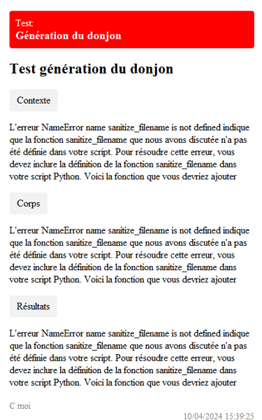
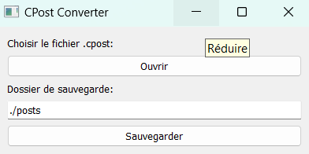

CPOST documentation
Introduction
Contexte
Cpost est une application qui permet de convertir des fichiers au format .cpost en post HTML / PNG. Ce projet a vu le jour dans des contexte de gestion de projet où il était nécessaire de partager des informations de manière simple et rapide. Vous apprendrez ici comment installer, utiliser et comprendre Cpost.

Auteurs
Nathan Fourny | Développement ; Rédaction de la documentation
Documentation Hors Ligne
Vous pourrez retrouver le pdf de la documentation hors ligne ici : Documentation Hors Ligne
Téléchargement
Dépendances
Pour pouvoir utiliser et faire fonctionner Cpost vous aurez besoin des outils suivant :
- Téléchargez wkhtmltoimage
- Assurez vous d'ajouter la variable d'environnement de wkhtmltoimage à votre PATH
Windows
Pour utiliser Cpost, rendez-vous sur le github du projet et téléchargez le projet zip de la branch main.
Décompressez le .zip dans un dossier de votre choix.
Ouvrez un terminal dans le dossier du projet et exécutez la commande suivante pour installer toutes les dépendances:
pip install -r requirements.txt
Vous pouvez désormais exécuter le script transpileur.py.
Linux
À définir
MacOS
À définir
Extension .cpost sur VSCode
Pour faciliter l'édition des fichiers .cpost, vous pouvez installer l'extension .cpost sur Visual Studio Code.
L'extension est aussi disponible depuis l'onglet Extension directement sur Visual Studio Code.
Utilisation
Créer un fichier .cpost
Pour créer un fichier .cpost, il vous suffit de créer un fichier texte et de le nommer avec l'extension .cpost.
Remarque: Il est conseillé d'utiliser le bloc note ou une IDE comme Visual Studio Code
Syntaxe
La syntaxe des fichiers .cpost est très simple. Voici un exemple de fichier .cpost :
type: test
#type: fix
#type: post
titre: Titre du post
objet: Objet du post
contexte: Contexte du post
corps: Corps du post
resultats: Résultats du post
auteur: Auteur(s) du post
Remarque: Vous pouvez retrouver un template.cpost dans le github du projet
Convertir un fichier .cpost
Pour convertir un fichier .cpost en post HTML / PNG, il vous suffit d'exécuter le script transpileur.py.
Une fois lancé une petite application va apparaître. Vous pourrez sélectionner le fichier .cpost que vous souhaitez convertir.

Une fois sélectionné vous pouvez choisir le dossier de sauvegarde du post. Par défaut il crée un dossier "posts" dans le dossier du projet.
Vous pouvez finalement cliquer sur le bouton "Sauvegarder" pour générer le post.